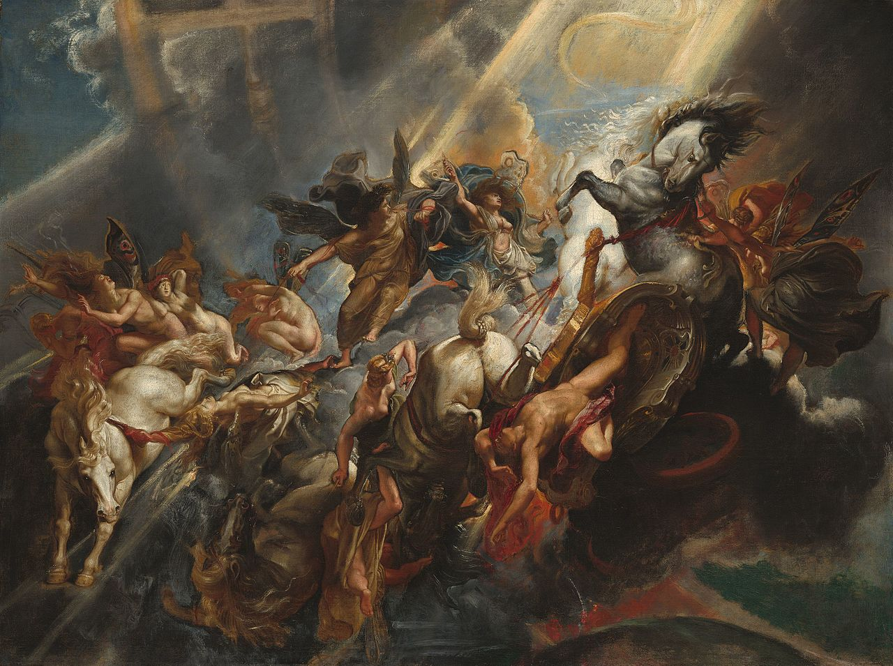

Relatant l'ensemble des mythes provenant de la Grèce antique, la mythologie grecque est à l'origine de la religion grecque. Ces récits sont aussi à l'origine, pour une large part de la mythologie romaine.
Riche en aventures et autres épopées palpitantes, la mythologie grecque présente des héros maniant force et courage, faisant parfois face à de terribles monstres issus de l'imagination la plus fertile, ou encore défiant les dieux les plus puissants. La mythologie grecque perpétue la philosophie, la symbolique à travers les âges, et rapproche les mortels des immortels.
Les dieux sont omniprésents dans la mythologie grecque, ils en sont les fondements et eux mêmes sont une famille, une famille pour le moins féconde.
Toutes ces légendes constituant la mythologie grecque ont traversés les siècles pour nous parvenir, elles furent tout d'abord racontées de façon orale sur les scènes de théâtres et autres, puis de par la suite de façon littéraire. A travers les âges, les versions (ou traditions) ont été écrites, ré écrites, traduites et très certainement embellies.
Malgré sa luxuriante abondance et sa complexité touffue, de toutes les mythologies, la mythologie grecque est celle qui nous est la plus familière. Elle nous semble claire et lumineuse. Chacun des êtres divins ou héroïques, qui la peuplent, a sa personnalité, son caractère, ses attributs, son histoire; chacun d'eux est, pour ainsi dire, le centre d'un vrai cycle de mythes. Une clarté certainement bien trompeuse, tant les mentalités des anciens Grecs étaient éloignées des nôtres. Mais c'est qu'un caractère de la mythologie grecque explique en partie tous les autres : elle est, plus qu'aucune autre, essentiellement polythéiste et anthropomorphique.
C'est aussi que cette mythologie a largement débordé du creuset religieux dans lequel elle s'est formée, pour susciter réappropriation sur réappropriation, au fur et à mesure qu'elle se déployait dans tous les domaines des arts et des lettres. En prenant parfois des tournures aussi peu grecques que possibles - il suffit de penser à cette variation dublinoise sur les thèmes de l'Odyssée qu'est l'Ulysse de James Joyce, par exemple, pour comprendre ce que cela signifie.
Les premiers philologues comparatistes ont montré que par de nombreux aspects, la mythologie grecque s'apparente aux mythologies dites indo-européennes (mythologies indienne, perse, nordique, etc.). Mais elle ne peut se réduire à cela. Un important fonds proprement méditerranéen - disons autochtone ou préhellénique, pour faire court - peut y être identifié. Les relations de la Grèce avec les peuples et les civilisations de l'Orient classique (Phéniciens, Phrygiens, Égyptiens) ont également contribué à enrichir la mythologie de beaucoup d'éléments nouveaux. Dès l'aube de la période historique, cependant, ces éléments hétérogènes étaient déjà mêlés et fondus; Hésiode, dans sa Théogonie, en particulier a coordonné les principales idées éparses dans la Grèce, et établi un ordre chronologique dans la succession des dieux.